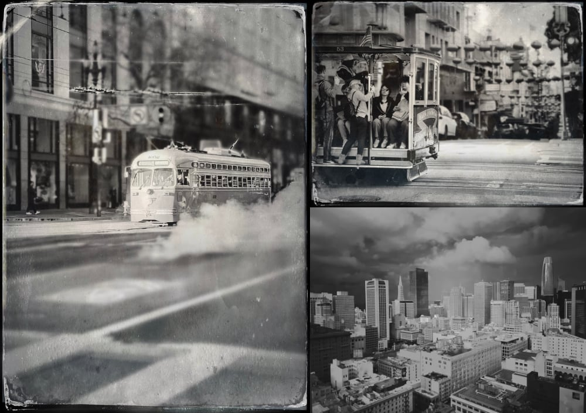

Our goal with the annual report isn’t to show-off or create some highlights reel of how great things are going. In fact, some things are good, some are bad and it ebbs and flows between years.
We try to keep track of as much as possible: finances is easy – the tax man needs that, and hours for invoicing isn’t too bad. Sometimes our invoices are fixed fee, so we’re not as tight with watching the clock. Then some meetings are spent catching-up with everyone after a long weekend or holiday – so we’re on the clock, but it’s not “work”.
Hopefully, by publishing some numbers and trends each year, others who have been doing this awhile or anyone interested in becoming a freelancer or small business has some sort of real-world benchmark.
Finances
In 02024, we invoiced only 3 different customers. Two them were abroad and the 3rd was part of a University funded project that we got pulled into because they needed technical support for the survey software we built that they used. Overall, it was less than a day’s worth of hours. The vast majority of our income currently comes from a single US customer that we are on retainer. That doesn’t mean it is a single project! We’ve probably had conversations with 5-6 different companies. It’s great work, fun, and interesting, but if that well runs dry, we’d be scrambling to make-up the deficit!
That’s not to say we are not doing other work or have other (planned) revenue streams. Our iOS app income is pitiful. We started to experiment with KDP print on demand to see if we could make some passive income. The goal was to spend some time and effort on marketting before the christmas holidays, but other work got in the way and it withered on the vine. We did get our first payout in early 02024 and the amount sent was less than the banking fees, so we actually lost money!
Overall, in 02024 the company lost money. We spent money mostly on salaries and are not yet generating enough income. The amount we are losing each month is minimal, but with constant inflation and other people tightening their belts, the gap will only increase unless we sort out a better plan. We invested in more people and we know it will take some time to payoff. It is a bet, but we have a few more years until it becomes a major problem.
One of our goals in 02025 is to take a bit more control over some projects. We are mostly used as support through a US company. At somepoint, we’d like one of those projects to graduate to either us billing directly, us taking equity or billing by the hour instead of a retainer. We also want to meet more freelancers and small companies in Iceland. These last few years we’ve been quiet locally and haven’t built-up any new contacts. Our travel has been minimal, so no meeting new folks at conferences and events. It is no surprise that we have not diversified our income as much as we’d liked.
Services
Programming/Prototyping
We did quite a lot of programming and prototyping this year! We worked in the backend API and iOS app for a company in Miami. We also worked on an iPad and Vision Pro project for a different Miami company.
Through all that we continue to tinker on various projects of our own. We’ve refined a few PHP scripts to generate mazes and cipher puzzles.
We’ve also laid a lot of ground work for 2-3 new game ideas. They are in various states of completeness. Some are a wireframe prototype, others are nearly “done” we’re just tweaking what’s “fun” about them.
Meetings
We’ve been in daily stand-ups for 15-60 minutes pretty much every weekday this year. 50 work weeks * 5 days a week = 250 days * an average of 30 minutes is around 125h (5.21 days) or 16 2/3’s work days in just meetings!
And that’s only on 1 project. We have ad hoc meetings for the surveys, with the Miami teams and Australian projects too.
Then there are meetings about meetings, meetings to meet people, meetings to pitch, meetings review, meetings about planning, and traveling to meetings (sometimes a quarter of the way around the globe)
Data Analytics
For the SpellStruck project, our main roll is data analytics. We create weekly reports for Disney and help our team to answer questions and review how changes in the app impacted any number of variables. We’ve made small iterative changes in 02024, but there are big plans in 02025.
As for other analytics projects, we’ve loaned our expertise in explaining both how we collect event data but also survey data. None of these required us to build, collect or analyze anything, mostly sanity check others’ work.
Consulting
There hasn’t been a lot of consulting this year – it has mostly been doing! Rather than discuss possibilities or get paid to weigh-in with our opinions, we’ve been getting our hands dirty with prototyping.
Design
As for design work, we did lots of it, but not for other people. Through out the year we continue to “design” lots of things from experiences, to newsletters, to user flows. Most people might assume design means a product, a logo, or branding. We didn’t do that sort of design, but we always have one-foot securely in the design world. As part of our prototyping process, we make the designs. No one is supplying us with photoshop files to replicate, we’re focusing on functionality and flows, then loop back and clean-up all the developer “design” into something more on brand or cleaner for the customer.
Expenses
| Category | 02014 | 02015 | 02016 | 02017 | 02021 | 02022 | 02023 | 02024 |
|---|---|---|---|---|---|---|---|---|
| Office Supplies | 3.39% | 1.49% | 3.80% | 2.44% | 12.29% | 7.1% | 1.96% | 4.75% |
| Tax | 37.38% | 55.78% | 57.63% | 52.22% | 35.24% | 53.3% | 25.04% | 43.22% |
| Salary | 42.1% | 34.84% | 33.76% | 38.39% | 46.51% | 36.9% | 67.10% | 47.19% |
| Conferences | 4.85% | 2.34% | – | 5.05% | – | – | 2.39% | 2.61% |
| Projects | 1.03% | 1.69% | 0.27% | – | 3.6% | – | 0.83% | – |
| Education | – | – | – | – | – | – | – | – |
| Professional Services | 2.83% | 2.72% | 5.56% | 1.64% | 2.36% | 2.7% | 2.68% | 2.27% |
| Contractors | 7.85% | – | – | – | – | – | – | – |
| Analog.is | 0.42% | – | – | – | – | – | – | – |
Looking back over the last 10+ years of expenses, we’ve certainly settled into a pretty good rhythm. The cost of our professional services: Accountants, Accounting software, and Legal (not used in a while) is steady at 2-3% of our total expenses. Similarly office supplies were 4.75% which is slightly above the average 4.65%. Office supplies includes Internet, phone, paper, toner, hardware, furniture, equipment and more.
The cost to run the office with professional services is probably around 10% of our overall expenses. The good news is that much of these are fixed costs. The price of the accounting software and hours the accountants spent working on the annual report do not increase with the number of employees or increased income.
As always, our biggest expense is around our people. Salary and Tax account for ~90% of our expenses. That’s something to remember when an employee asks to expense something like a book or hardware: it is a tiny portion of the overall cost! Strangely, the Icelandic tax office does some estimations and pre-bills you a bunch for taxes, which you pay. Then they reimburse you any overages. Since we’re not looking at reimbursements from the tax office, this category is a higher number than reality, but you still need that money in the bank since they pay you back the following year.
Travel & Conferences
This year, we only travelled to San Francisco for the GDC conference, but we didn’t attend, only meetings both internal and external.

We didn’t manage to speak or present at any conferences, local or abroad. This is something we’d like to fix in 02025 – get back on stage and share some knowledge and meet some interesting folks!
Web Stats
We don’t do any paid advertising. The way we get people to know about us is via what we write and say. Any time we’re on a podcast, interview or conference we are representing (optional.is) and are promoting our expertise. This is a very slow burn. It might take a long time between someone seeing or reading and contacting us, but when it does we have already set some sort of understanding.
The other way is for us to constantly produce written works. That’s via the /required articles like this one and our newsletters. We don’t look closely at the stats because it might influence how or what we write about. We even removed all the tracking from the newsletters and send them ourselves – not through a 3rd party company. We also added feeds this year, so some people might not even read our content on our site and therefore they’re not in the server log analytics.
Here is a breakdown of the top articles in 02024. Some are very old and have lots of link juice in search engines. Some of the new articles have a quick burn of a month or less and others sleep for a while until someone re-posts and we get lots of traffic from a random forum or school course curriculum.
| Article | Year | Traffic |
|---|---|---|
| Yankee Candles Levels of Abstraction | 02022 | 15.57% |
| What 2D Barcodes aren’t | 02011 | 3.52% |
| SF Symbols Font | 02019 | 1.80% |
| Print On Demand | 02010 | 1.67% |
| CERN Line Mode Browser | 02013 | 1.58% |
| Poisonous People | 02010 | 0.93% |
| PaperNet Boarding Pass | 02010 | 0.90% |
| Accessible Color Swatches | 02011 | 0.69% |
| Color Name Abstractions | 02022 | 0.52% |
| Spimes: A Happy Birthday Story | 02013 | 0.49% |
| Future predicting: What might happen in the next hundred years? | 02009 | 0.47% |
| iPhone IR Photography | 02023 | 0.46% |
| 02023-TIL | 02024 | 0.45% |
The best time to start writing was yesterday, the second best time is today!
Open Office Hours
We started open office hours back in 02021. In 02024, no one book a meeting. We’re very flexible, so close friends we probably met for lunch or a coffee much more informally than scheduling a video call. We also only really promote it via our ◍ Quarternotes newsletter, so there are opportunities to get our Open Office Hours out in front of more people.
We, and plenty of other interesting people on the UnofficeHours.com webring, still run open office hours where you can book a 30 minute chat.
If you’re interested, feel free to book some time to chat about anything.
Projects
This year we helped two security companies build out their platform, helped convert CSVs from one type to another, build some VR experience for high-end properties in the Bahamas, pitched (atleast) two new games to publishers, one super top secret idea pitching project and continued survey work.
We also lost two running projects this year and a third never got off the ground. A lot of time was spent at the end of 02023 and early 02024 on a security company that had a bad ending when the team split. We ended-up going with the half that split off and helped them with their prototype. Great opportunities from bad.
The other project was down in Australia. We were helping a company to integrate their warehouse software to their sales software. The APIs were not great, what we got was hard to match and our contact had pretty much checked-out and was heading to a new job. After some discussions, we decided to cut the cord and not build some intermediary system handle it all – that isn’t our core business so we canceled the project.
The third project that we started to spec-out around was around online fitness, but we never had the time to get it off the ground and the potential customer has probably just gone elsewhere. This was mostly our middle-man contact who dropped the ball – we were going todo the development and our contact just didn’t have the time to help on their end. It’s probably the best for the customer in the end.
There are always loads of other projects in the pipeline which turn out to not be a fit, be too expense, not in scope, etc. But these three projects had plenty of work already done when the plug got pulled. Luckily, we were paid for our time, but it does mean that we had to scramble to sometimes fill the void.
The newest project experience for 02024 was working with the Apple Vision Pro. As part of one project, we were given access to a device to build a prototype, which snowballed into something much bigger.
Notes for 02025
Looking back at the notes from 02023, about 02024. We were complaining about office renovations and back-up plans. It didn’t finish in 02024 and is now rolled-over to 02025! Luckily, our back-ups are in a very good place. We recently invested in an off-site NAS back-up. We’re JUST about to an industry standard 3-2-1 backup plan for all our data. The office is almost there. We’ve pivoted a little and are re-arranging to accommodate for a video recording setup. We want to have both better remote meetings and to try to record/stream some content. It doesn’t require a lot of specialized equipment, but it does mean a lot of cable management!
In 02025, we plan on doing more work with the Apple Vision Pro. We’ve had a few meetings about potential projects and done some more experiments. The biggest issue is hardware uptake. This is a long game, VR is a long game (and one that may never come to fruition!)
We also have a project in Australia which could potentially be quite big. If we get the green light on that, we’ll be deep in building an online web-based tool to manage scaffolding jobs and resources.
Finally, our biggest goal for 02025 is to get on top of our time and finances. All of our projects seem to blend into one-an-other and that makes things a bit more chaotic. In an ideal situation, we’d set down a much better timeframe and structure for client interactions. On Mondays, we can work on X. (Sure we can be flexible, but in 02024 we’re getting lots of last minute requests). This will help customers know we’re on the clock those days for them and they also have a responsibility to be ready to give use the content, feedback and tools we need to continue.
This isn’t necessarily about getting more work done, it’s mostly trying to distribute the work load evenly. 02024 was took bumpy and clumpy for our liking.